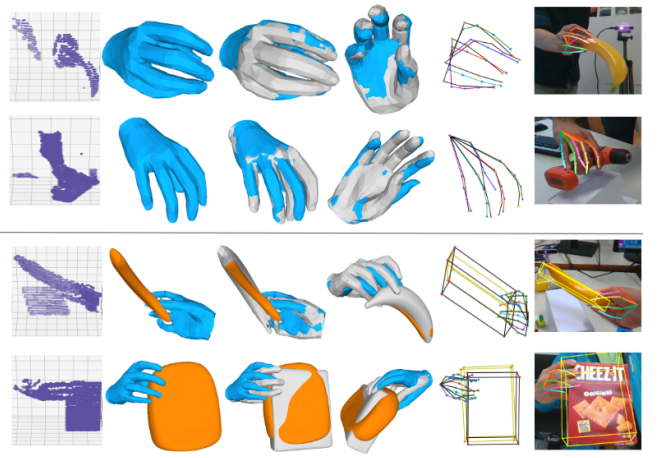
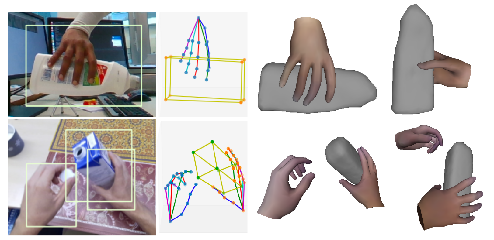

Ahmed Tawfik Aboukhadra
I'm a Researcher at the Augmented Vision department at DFKI and a PhD student at RPTU in Kaiserslautern working on hand object pose estimation and 3D reconstruction from RGB and Depth using Deep Learning methods such as GCNs and Transformers since October 2021. I have a M.Sc. in Artificial Intelligence from Maastricht University and a B.Sc. in Computer Science from the German University in Cairo.
Experience
-
Oct 2021 - Now ResearcherAugmented Vision, DFKI Kaiserslautern, Germany
 Hand-Object 3D Reconstruction from RGB and depth using Deep Learning networks such as GCNs and Transformers
Hand-Object 3D Reconstruction from RGB and depth using Deep Learning networks such as GCNs and Transformers -
March 2021 - August 2021 M.Sc. ThesisCISPA Saarbrücken, GermanyML Privacy: Investigating defenses against ML attacks on deep ConvNets as a Master thesis
-
Sep 2020 - Jan 2021 ML InternHackerOne Groningen, The NetherlandsWorked on developing an ML-based system for detecting duplicate vulnerability reports using NLP techniques such as Word Embedding and BERT
Education
-
 October 2021 - Ongoing Ph.D. in Computer ScienceRPTU Kaiserslautern, Germany
October 2021 - Ongoing Ph.D. in Computer ScienceRPTU Kaiserslautern, Germany -
 Sep 2019 - August 2021 M.Sc. in Artificial IntelligenceMaastricht University Maastricht, The Netherlands
Sep 2019 - August 2021 M.Sc. in Artificial IntelligenceMaastricht University Maastricht, The Netherlands -
Oct 2014 - May 2019 B.Sc. in Computer Science and EngineeringGerman University in Cairo (GUC) Cairo, Egypt
Teaching
-
Nov 2022 LecturerRPTU Kaiserslautern, GermanyGraph Convolutional Networks and Transformers and their applications in 3D Pose Estimation
-
Oct 2019 - May 2020 Teaching AssistantMaastricht University Maastricht, The NetherlandsOOP using Java, Machine Learning, and Data Structures and Algorithms
-
Oct 2018 - May 2019 Teaching AssistantGerman University in Cairo (GUC) Cairo, EgyptIntroduction to CS using Python
Publications
-

SurgeoNet: Realtime 3D Pose Estimation of Articulated Surgical Instruments using a Synthetically-trained Network
Ahmed Tawfik Aboukhadra, Nadia Robertini, Jameel Malik, Ahmed Elhayek, Gerd Reis, Didier Stricker; German Conference on Pattern Recognition (GCPR), 2024
ShapeGraFormer: GraFormer-Based Network for Hand-Object Reconstruction from a Single Depth Map
Ahmed Tawfik Aboukhadra, Jameel Malik, Nadia Robertini, Ahmed Elhayek, Didier Stricker; IEEE Access, 2024

Skills
PythonPyTorchDeep LearningJavaOOPComputer VisionGitSQL
Achievements
-
2019 M.Sc. ScholarshipUM Holland High-Potential Scholarship Holder 2019. €58,000 grant to pursue a MSc in AI.
-
2017 ACPC FinalistFinalist at Arab Collegiate Programming Contest (ACPC) 2017, 28th Place.